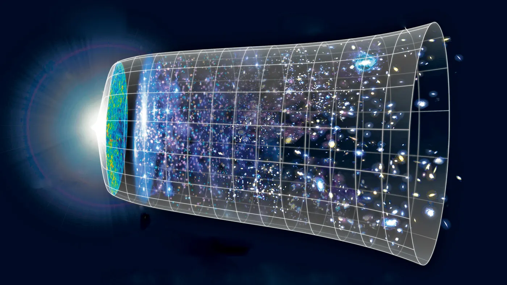
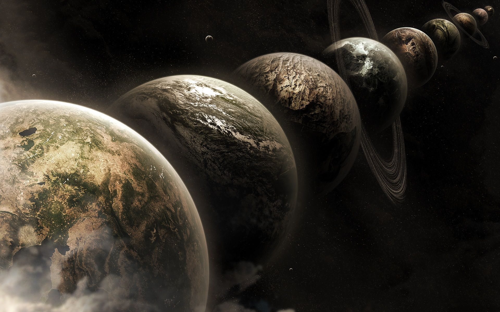
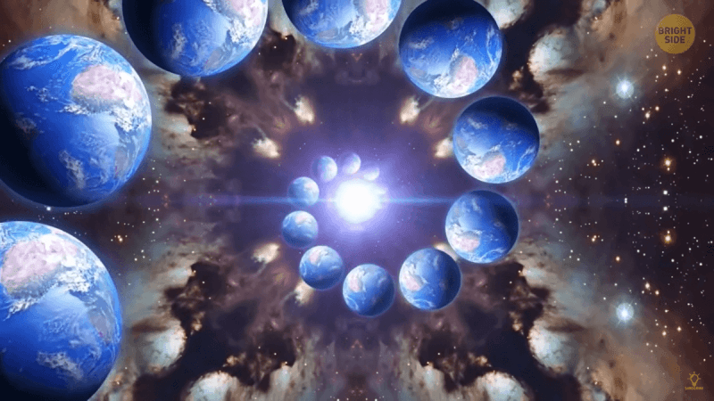
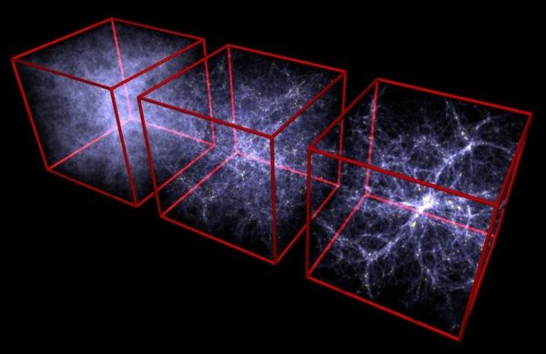
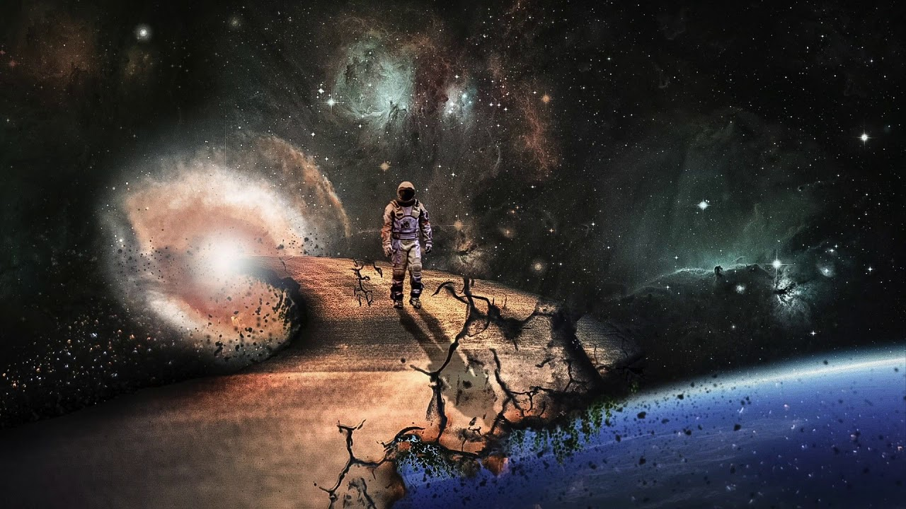
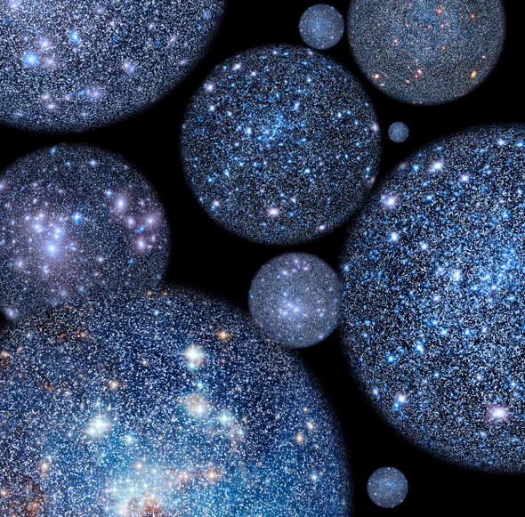

The multiverse concept is a speculative and theoretical framework that suggests the existence of multiple universes or realms, beyond the observable universe that we currently inhabit. This idea has its roots in various scientific theories, philosophical discussions, and speculative fiction. Here is a concise overview of the multiverse concept:(click on the images to view detail information about it)
1. Cosmic Inflation:

2. Parallel Universes:

3. Many-Worlds Interpretation (MWI) of Quantum Mechanics:

4. String Theory and Extra Dimensions:

5. Anthropic Principle:

6. Categorization of Multiverses:

Conclusion:
The multiverse concept is a fascinating and complex idea that merges scientific theories with philosophical speculation. While it remains speculative and is not universally accepted within the scientific community, it continues to captivate the imagination and fuel discussions about the nature of our existence and the cosmos.
1. Cosmic Inflation:
Cosmic inflation is a theoretical framework in cosmology that postulates a brief, exponential expansion of the universe during the first moments of its existence. Proposed to address certain problems in the standard Big Bang model, inflationary theory was first introduced by physicist Alan Guth in 1980. According to this idea, the universe underwent an extremely rapid and exponential expansion in the first 10^(-36) to 10^(-32) seconds after the initial Big Bang. This expansion helps explain the observed uniformity of the cosmic microwave background radiation and the large-scale structure of the universe.
The primary motivation for cosmic inflation is its ability to resolve the horizon problem and the flatness problem in cosmology. The horizon problem arises from the apparent isotropy of the cosmic microwave background, which suggests that widely separated regions of the universe were in thermal contact but should not have had sufficient time to equilibrate. Inflation addresses this by allowing distant regions to be in contact before the rapid expansion, thus homogenizing the early universe. The flatness problem concerns the fine-tuned balance required for the universe to be so close to flat on large scales. Inflationary expansion naturally flattens the geometry of the universe, providing an elegant solution to this problem.
The driving force behind inflation is a hypothetical field called the inflaton, which is characterized by a potential energy that dominates the energy density of the early universe. As the inflaton field undergoes a phase transition, it drives a rapid expansion of space. The inflationary epoch ends when the inflaton field decays into ordinary particles, initiating the more familiar hot Big Bang phase of the universe's evolution.
While cosmic inflation has been successful in addressing several cosmological puzzles and is consistent with a range of observational data, it is important to note that specific details of the inflationary mechanism remain speculative, and further experimental evidence is needed to fully confirm or refine the theory. Ongoing and future observational efforts, such as those related to cosmic microwave background polarization and large-scale structure, aim to provide additional support for the inflationary paradigm..
2. Parallel Universes:
The concept of parallel universes, also known as a multiverse, posits the existence of multiple, potentially infinite, universes that coexist alongside our own. This idea emerges from various theories within physics and cosmology, each suggesting different ways in which parallel universes might exist. One prominent hypothesis is the "Many-Worlds Interpretation" of quantum mechanics, proposing that every quantum event gives rise to a branching of the universe, resulting in a multitude of parallel realities. These parallel universes would encompass all possible outcomes of quantum events, offering an explanation for the probabilistic nature of quantum phenomena.
Another avenue for the multiverse concept comes from cosmological theories such as eternal inflation. In this scenario, the universe undergoes inflationary phases at different times and locations, creating "bubble" universes with distinct properties. Each bubble universe within this multiverse could have different physical constants, laws of physics, or even entirely different structures. String theory, a theoretical framework in particle physics, also suggests the existence of multiple universes within a broader multiverse context, where different vacuum states of string theory correspond to different universes.
While the notion of parallel universes is intriguing, it is currently highly speculative and lacks direct empirical evidence. Research and experimentation in fields like quantum physics and cosmology continue in the quest to explore the validity of the multiverse hypothesis. The concept sparks philosophical discussions about the nature of reality, probability, and the fundamental structure of the cosmos, highlighting the ongoing efforts to deepen our understanding of the universe's ultimate nature.
3. Many-Worlds Interpretation (MWI) of Quantum Mechanics:
The Many-Worlds Interpretation (MWI) of quantum mechanics is a theoretical framework that proposes a radical way to understand the nature of reality at the quantum level. Introduced by physicist Hugh Everett III in 1957, MWI suggests that every quantum event with multiple possible outcomes leads to the creation of parallel universes, each realizing a different outcome. In other words, instead of the wave function collapse inherent in other interpretations, MWI posits that all possible outcomes of a quantum measurement occur in separate, non-communicating branches of the universe.
In the Many-Worlds Interpretation, the universe constantly branches into myriad parallel realities, each representing a distinct quantum possibility. This branching process occurs every time a quantum system undergoes a superposition of states, and each branch evolves independently, creating an ever-growing "multiverse." MWI aims to provide a consistent and deterministic framework for quantum mechanics, eliminating the need for the mysterious collapse of the wave function, which is a key feature of other interpretations.
Critics of MWI argue that the proposal of an infinite number of parallel universes raises questions about testability and scientific falsifiability. While MWI has not been experimentally confirmed, its conceptual elegance and avoidance of certain interpretational issues make it an influential and widely discussed theory within the realm of quantum mechanics. The ongoing exploration of quantum phenomena and advancements in experimental techniques may shed light on the nature of quantum reality and potentially provide insights into the validity of the Many-Worlds Interpretation.
4. String Theory and Extra Dimensions:
String theory is a theoretical framework in particle physics that attempts to describe the fundamental building blocks of the universe as one-dimensional "strings" rather than point particles. A key feature of string theory is its requirement for extra dimensions beyond the familiar three spatial dimensions and one time dimension. In traditional physics, these extra dimensions are compactified or curled up at incredibly small scales, making them imperceptible in our everyday experiences.
String theory suggests that the vibrational modes of these tiny strings correspond to different particles, offering a unified description of all fundamental forces, including gravity. The need for extra dimensions arises to maintain mathematical consistency within the theory and to reconcile quantum mechanics with general relativity. In particular, the inclusion of extra dimensions allows for the incorporation of gravitational interactions into the framework of quantum mechanics.
The extra dimensions in string theory typically come in six or seven compact dimensions, forming a six- or seven-dimensional space in addition to the familiar four-dimensional spacetime. The specific geometry and size of these extra dimensions play a crucial role in determining the observable properties of our universe. Some models propose that these extra dimensions are "warped," influencing the strength of gravity and explaining why it appears weaker than other fundamental forces.
Despite its theoretical elegance, string theory has yet to be experimentally validated, and the existence of extra dimensions remains speculative. Ongoing research and experiments, including those at high-energy particle accelerators and astrophysical observations, aim to test the predictions of string theory and explore the possibility of detecting effects related to extra dimensions. The quest to understand the nature of these dimensions and their potential implications for our understanding of the universe continues to be a forefront area of theoretical physics.
5. Anthropic Principle:
The Anthropic Principle is a philosophical and scientific concept that addresses the apparent fine-tuning of the fundamental constants and parameters of the universe to support the existence of life. It posits that certain features of the cosmos are constrained by the necessity for observers, like humans, to exist and observe them. The Anthropic Principle comes in two main forms: the Weak Anthropic Principle (WAP) and the Strong Anthropic Principle (SAP).
The Weak Anthropic Principle suggests that the observed values of physical constants and properties are the way they are because if they were different, life, as we know it, would not be possible. In other words, our observation of the universe is constrained by the fact that we are here to observe it. The Strong Anthropic Principle takes a more metaphysical stance, proposing that the universe must have the properties necessary for the emergence of intelligent observers.
Critics argue that the Anthropic Principle can be tautological, as it seems to explain the observed values of constants by the very fact that we exist to observe them. Proponents, however, contend that it provides a framework for understanding the seemingly improbable conditions that allow for the existence of life in the universe. The debate over the Anthropic Principle extends into discussions about the nature of the universe, the role of chance, and the potential existence of a multiverse.
The Anthropic Principle has been invoked in various scientific contexts, including discussions about the fine-tuning of the cosmological constant, the strength of fundamental forces, and the properties of our solar system. While it remains a topic of debate and speculation, the Anthropic Principle has influenced cosmological thinking by prompting scientists to consider the significance of our own existence in interpreting the characteristics of the universe.
6. Categorization of Multiverses:
The concept of the multiverse encompasses various categorizations, each proposing different ways in which multiple universes might exist. One common classification distinguishes between the Level I, Level II, and Level III multiverses.
1.Level I Multiverse:
The Level I multiverse, also known as the "Quilted Multiverse" or "Infinite Universes," arises from the idea of cosmic inflation. It suggests that our observable universe is just one of many regions that underwent inflation, leading to the creation of multiple non-communicating "bubble" universes. These universes share similar fundamental physical laws but may differ in their specific properties.
2.Level II Multiverse:
The Level II multiverse introduces the concept of different "pocket" or "bubble" universes with distinct properties. This idea is often associated with eternal inflation, where new bubble universes continuously form within an inflating space. Each pocket universe could have its own set of physical constants and laws of physics, potentially explaining the observed fine-tuning of our universe.
3.Level III Multiverse:
The Level III multiverse is rooted in the framework of the Many-Worlds Interpretation (MWI) of quantum mechanics. According to MWI, every quantum event results in the creation of multiple branches or parallel universes, encompassing all possible outcomes of the event. This leads to a vast multiverse with countless branches representing different quantum possibilities.
Beyond these levels, other classifications of the multiverse include the mathematical landscape of string theory, where different vacuum states may correspond to different universes, and the anthropic multiverse, which posits that the fundamental constants and laws of physics are fine-tuned for the existence of observers.
While these categorizations provide a conceptual framework, it's important to note that the multiverse hypothesis remains speculative and lacks direct empirical evidence. Ongoing research in cosmology, quantum physics, and string theory aims to explore the potential existence of multiple universes and refine our understanding of the nature of the multiverse.